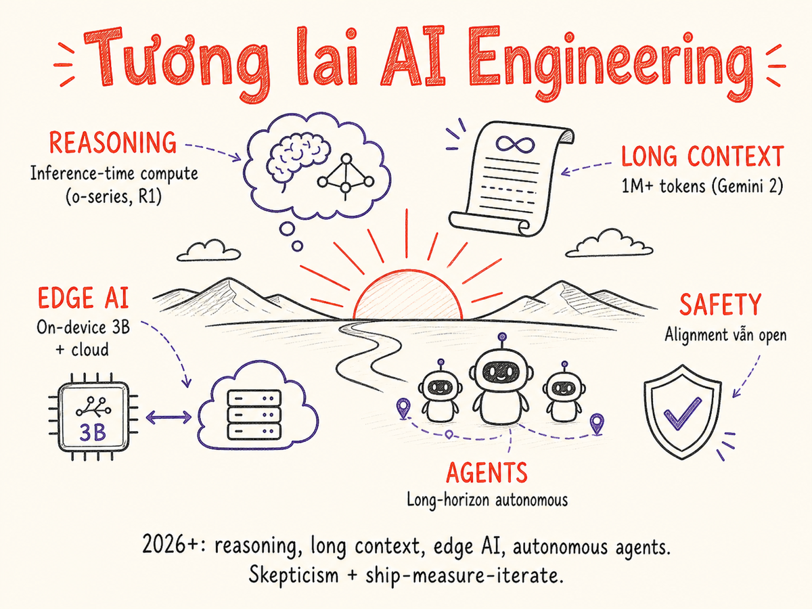

Tương lai & các chủ đề nâng cao
Reasoning models, long context, on-device AI, autonomous agents, open problems — cái gì đang thay đổi nhanh nhất, cái gì cần học tiếp, và mindset để navigate một field tiến hóa từng tuần.

22.1 Reasoning Models
Một trong những bước nhảy vọt quan trọng nhất trong năm 2024–2025 là sự xuất hiện của reasoning models — models được train để "suy nghĩ trước khi trả lời" thông qua chain-of-thought nội bộ, thường ẩn với người dùng nhưng tác động lớn đến quality.
Các models tiêu biểu
- OpenAI o-series (o1 → o3 → o4-mini): Ra mắt o3 và o4-mini đầu 2025 — o3 đạt state-of-the-art trên Codeforces, SWE-bench, MMMU; o4-mini tối ưu cho cost thấp
- Anthropic Claude extended thinking: Cho phép visible thinking budget, reasoning có thể inspect; tích hợp vào Claude 3.7 và Claude 4
- DeepSeek-R1: Open-source reasoning model từ DeepSeek, chứng minh inference-time scaling: tạo 10–100× tokens mỗi query so với standard model
- Google Gemini reasoning: Thinking mode trong Gemini 2.x series
Inference-time compute scaling
Paradigm shift quan trọng: thay vì chỉ scale training compute (bigger model, more data), reasoning models scale inference compute — dùng nhiều compute hơn lúc generate để "suy nghĩ kỹ hơn". Điều này có nghĩa:
- Cùng model có thể cho quality khác nhau tùy lượng thinking budget
- Tradeoff: thinking time/cost vs accuracy
- Một số tasks (coding, math) benefit rất nhiều; creative tasks benefit ít hơn
- Quy mô thực tế (2025): OpenAI chi ~$2.3 tỷ cho inference trong năm 2024 — gấp 15× chi phí train GPT-4; các nhà phân tích dự báo inference sẽ vượt training 118× về nhu cầu compute vào 2026
Khi nào dùng reasoning models
Dùng reasoning model khi task cần multi-step logical reasoning: toán học, code review, complex analysis, planning. Không cần cho: simple Q&A, summarization, creative writing — latency và cost cao hơn mà không tương xứng benefit.
22.2 Long Context (1M+) Techniques
Context window đã tăng từ 2k tokens (GPT-2) lên 1M+ tokens (Gemini 1.5 Pro, Gemini 2.0). Điều này mở ra khả năng nhưng cũng đặt ra thách thức mới.
Efficient attention techniques
- FlashAttention: Tối ưu memory bandwidth khi tính attention — không thay đổi kết quả, chỉ nhanh hơn. Đã là standard trong phần lớn modern models.
- Ring Attention: Phân tán context window qua nhiều devices — cho phép xử lý context cực dài bằng cách chia nhỏ qua GPU cluster.
- Sliding window attention: Mỗi token chỉ attend đến N token gần nhất, không phải toàn bộ context. Trade-off: không recall thông tin cách xa.
Long context vs RAG: khi nào dùng cái nào
| Long Context (context stuffing) | RAG (retrieval) | |
|---|---|---|
| Phù hợp khi | Cần reason across toàn bộ document, quan hệ xa-gần đều quan trọng | Knowledge base lớn hơn context window, chỉ cần phần relevant |
| Cost | Cao nếu document lớn và nhiều queries | Có overhead embedding + retrieval nhưng input tokens ít hơn |
| Latency | Cao với long input (TTFT tăng tuyến tính) | Retrieval overhead nhỏ, input nhỏ hơn → faster |
| Accuracy risk | "Lost-in-the-middle": model có thể bỏ sót info ở giữa context dài | Retrieval failure: không fetch đúng chunk |
Lost-in-the-middle problem
Research chỉ ra rằng LLMs thường xử lý tốt thông tin ở đầu và cuối context, nhưng có xu hướng "quên" thông tin ở giữa khi context dài. Mitigation: đặt thông tin quan trọng nhất ở đầu hoặc cuối prompt, không ở giữa.
22.3 On-Device & Edge AI
Một trend song song với cloud AI là chạy models trực tiếp trên thiết bị — smartphone, laptop, embedded systems. Điều này mang lại: privacy (data không rời thiết bị), offline capability, và zero latency.
Ecosystem và tools
- Apple Intelligence: On-device models tích hợp vào iOS/macOS — dùng cho summarization, reply suggestions, mà không cần cloud.
- Phi series (Microsoft): Small language models (1B–7B) được optimize để chạy tốt trên hardware thông thường, đặc biệt là edge devices.
- Gemini Nano: Phiên bản nhỏ nhất của Gemini, chạy on-device trên Android. Tích hợp vào Pixel và nhiều Android devices.
- MLX: Apple's ML framework cho Apple Silicon — chạy models như Llama, Mistral trực tiếp trên M-series chip với hiệu năng tốt bất ngờ.
- Core ML: Apple's framework để deploy ML models trên iOS/macOS, tận dụng Neural Engine trong chip A-series và M-series.
NPU — Neural Processing Unit
Modern chips (Apple M-series, Qualcomm Snapdragon, Intel Core Ultra) đều có NPU chuyên dụng cho AI inference. NPU thường 3–10x hiệu quả hơn CPU cho matrix operations. Điều này có nghĩa on-device AI sẽ ngày càng practical hơn.
Pattern phổ biến là hybrid: on-device model cho tasks nhỏ, nhanh, private; cloud model cho tasks phức tạp, low-frequency. Apple Intelligence thực hiện pattern này: simple tasks local, complex tasks → Private Cloud Compute.
22.4 Autonomous Agents & Safety
Agents có khả năng thực hiện long-horizon tasks — không chỉ trả lời câu hỏi mà còn thực hiện chuỗi actions trên môi trường thực (browse web, execute code, call APIs, send emails). Đây là frontier đang phát triển nhanh nhất — và nguy hiểm nhất nếu không build đúng.
Long-horizon task challenges
- Error accumulation: Một bước sai → các bước sau lệch hướng — cascade failure
- Context management: Sau 50 bước, context đầy, model "quên" mục tiêu ban đầu
- Irreversible actions: Delete file, send email — không thể undo
- Unexpected states: Environment không behave như expected (website thay đổi layout, API error)
Sandboxing và containment
Mọi agent thực hiện actions nên chạy trong sandbox:
- Container với network restrictions — chỉ allow connections tới approved endpoints
- Filesystem isolation — agent chỉ access được một working directory
- Read-only mode by default, write requires explicit confirmation
- Time limits — kill agent nếu chạy quá X phút mà không complete
- Resource limits — CPU, memory, API call rate limits
Human-in-the-loop oversight
Với tasks có rủi ro cao, luôn có checkpoint cần human approval:
- Pre-flight review: Trình bày plan trước khi thực hiện, human approve
- Milestone checkpoints: Dừng ở các bước quan trọng để confirm
- Undo capability: Thiết kế để actions có thể rollback
- Audit trail: Log mọi action agent thực hiện, có thể review sau
Computer use — agents điều khiển UI thực
Một frontier quan trọng là agents có thể điều khiển trực tiếp giao diện đồ họa (GUI) thay vì chỉ gọi API:
- Claude Computer Use (Anthropic, tháng 10/2024): Click, gõ, screenshot — thực hiện tasks trên desktop/browser thực
- Operator → ChatGPT agent mode (OpenAI, tháng 1/2025): Tích hợp vào ChatGPT tháng 7/2025, đạt 87% thành công trên các trang JavaScript phức tạp
- Project Mariner (Google, tháng 12/2024): Điều hướng Chrome dựa trên Gemini 2.0
- Amazon Nova Act (tháng 12/2025): Agent tự động hóa trình duyệt web
Responsible Scaling Policy (RSP) v3.0
Anthropic phát hành RSP v3.0 (tháng 2/2026) — phiên bản quan trọng nhất từ trước đến nay:
- Giới thiệu Frontier Safety Roadmaps: kế hoạch công khai cho Security, Alignment, Safeguards, Policy
- Định kỳ Risk Reports (3–6 tháng/lần) với external expert review
- ASL-3 safeguards cho mối đe dọa hóa học/sinh học đã được triển khai thành công tháng 5/2025
- Tách biệt rõ: mitigation Anthropic làm unilaterally và roadmap cần hợp tác toàn ngành
Model Spec — Hiến pháp mới của Claude (tháng 1/2026)
Anthropic công bố Constitutional AI framework được cập nhật sâu: thay vì list quy tắc, hiến pháp mới giải thích lý do đằng sau mỗi nguyên tắc. Mục tiêu: Claude có đủ hiểu biết để tự suy luận trong tình huống không có rule nào định sẵn. Phát hành dưới CC0, Anthropic là hãng AI lớn đầu tiên chính thức thừa nhận khả năng model có moral status nhất định.
Capability vs alignment tension
Khi models ngày càng capable, câu hỏi về alignment trở nên quan trọng hơn: model làm đúng điều được yêu cầu hay đúng điều người dùng thực sự muốn? Hai điều này không phải lúc nào cũng giống nhau. Anthropic (Constitutional AI), OpenAI (RLHF), Google (RLAIF) đều có research teams tập trung vào vấn đề này.
22.5 Open Problems trong Evaluation
Evaluation vẫn là một trong những unsolved problems trong AI engineering. Thách thức ngày càng lớn hơn khi models ngày càng capable.
Eval saturation
Models đạt near-perfect scores trên nhiều benchmarks truyền thống (MMLU, HumanEval). Không phải vì bài toán đã solved — mà vì benchmarks quá dễ so với real-world complexity. Community liên tục phải tạo harder benchmarks (GPQA, FrontierMath, SWE-bench).
Benchmark contamination
Models được train trên internet data, và nhiều benchmark tests tồn tại trên internet. Kết quả: models có thể "biết" test answers từ training data, không phải vì genuinely solve được. Rất khó detect và prevent hoàn toàn.
Goodhart's Law cho AI
"When a measure becomes a target, it ceases to be a good measure." — Goodhart's Law
Khi optimize quá nhiều cho một metric cụ thể, models learn cách "game" metric đó mà không thực sự improve theo dimension bạn care about. Ví dụ: optimize cho reward model → model learn "flattery" thay vì truthfulness.
What's being worked on
- Dynamic benchmarks: test cases được generate fresh mỗi lần evaluation
- Multi-metric holistic evaluation thay vì single score
- Real-world task benchmarks (SWE-bench, WebArena, OSWorld) thay vì academic tests — o3/o4-mini đạt ~58% trên WebArena, ~38% trên OSWorld tính đến đầu 2026
- Human + AI hybrid evaluation panels
- FrontierMath, ARC-AGI-2: benchmarks mới được thiết kế để kháng contamination và benchmark saturation từ các models frontier
22.6 Reasoning + Tools Convergence
Một trong những trend quan trọng nhất là sự hội tụ giữa reasoning capability và tool use. Models không chỉ "nghĩ" mà còn "làm" — và ngày càng tốt hơn ở việc plan khi nào dùng tool nào, cách interpret tool results, và adapt plan khi tool fail.
Ví dụ: reasoning model + code execution có thể giải toán phức tạp theo cách "think → write code → run → observe result → refine". Đây hiệu quả hơn nhiều so với "think → answer" cho các bài toán computational.
Emerging patterns
- Think-then-act loop: Reasoning trước mỗi tool call, evaluate result sau
- Self-correction: Khi tool call fail hoặc cho unexpected result, model tự adjust plan
- Tool selection reasoning: Không chỉ biết dùng tool, mà biết khi nào không nên dùng
- Multi-step tool chaining: Kết quả tool này là input cho tool tiếp theo, với reasoning ở từng bước
22.7 Foundation Models for Science
Ngoài general-purpose LLMs, có một class models được train đặc biệt cho science domains. AlphaFold đã chứng minh rằng foundation models có thể giải quyết các bài toán khoa học mà con người không thể làm hiệu quả trong vài thập kỷ.
Domain-specific science models
- Biology: AlphaFold2/3 (protein structure prediction), ESM-2 (protein embeddings), AlphaGenome (genomics)
- Chemistry: ChemBERTa, MolBERT (molecular property prediction), RFdiffusion (protein design)
- Medicine: Med-PaLM, BioGPT (clinical note understanding, drug discovery)
- Climate: Pangu-Weather, GraphCast (weather forecasting)
- Materials: GNoME (Google DeepMind, discovery of 2.2M stable crystal structures)
AI Scientist — tự động hóa nghiên cứu khoa học
AI Scientist (Sakana AI, 2024–2025) là hệ thống tự động hóa toàn bộ quy trình nghiên cứu: đề xuất ý tưởng, viết code, chạy thí nghiệm, phân tích dữ liệu, viết paper, và tự peer-review. Một milestone quan trọng: paper AI-generated đầu tiên được chấp nhận tại workshop ICLR 2025, đạt điểm cao hơn 55% bài nộp của con người. Phiên bản AI Scientist-v2 (tháng 4/2025) bổ sung agentic tree search cho scientific discovery. Đây là tín hiệu sớm của self-improving AI trong nghiên cứu.
Điều thú vị cho AI Engineer: nhiều trong số này có API public hoặc open weights, có thể integrate vào applications theo cách tương tự LLM API.
22.7b Diffusion LLMs & World Models
Hai frontier mới nổi mạnh từ 2025 đang mở rộng đáng kể định nghĩa "mô hình ngôn ngữ":
Diffusion Language Models (dLLM)
Thay vì sinh token theo thứ tự trái-phải (autoregressive), diffusion LLMs bắt đầu từ nhiễu và dần "khử nhiễu" để sinh toàn bộ chuỗi song song. Ưu điểm chính:
- Throughput rất cao: Mercury (Inception Labs, 2025) đạt >1.100 tokens/giây trên H100 — nhanh hơn 10× so với models autoregressive cùng chất lượng
- Cho phép bidirectional context — token ở giữa có thể attend cả trái lẫn phải
- Các models mã nguồn mở: DiffuCoder, Seed-Diffusion; closed-source: Mercury, Gemini-Diffusion
- Hạn chế hiện tại: hệ sinh thái còn non trẻ, chưa có equivalents của KV-cache hay speculative decoding
World Models — từ video generation đến mô phỏng
World models không chỉ sinh video mà mô phỏng vật lý và môi trường tương tác:
- Genie 2 (Google DeepMind, tháng 12/2024): Sinh môi trường 3D tương tác từ ảnh đơn
- Genie 3 (tháng 8/2025): World model đầu tiên cho phép tương tác real-time, độ phân giải và consistency cao hơn đáng kể
- Veo 3 (Google, tháng 5/2025): Model đầu tiên sinh video + âm thanh/thoại đồng thời trong một pipeline; độ phân giải 4K với mô phỏng vật lý thực
- Sora 2 (OpenAI, tháng 9/2025): Sinh video dài với âm thanh đồng bộ, storytelling nhất quán
Implication cho AI Engineers: world models đang converge với robotics và simulation — training agent trong môi trường do AI sinh ra (synthetic data loop) là một trong những hướng mở rộng khả năng nhất.
22.8 Multi-Agent Ecosystems
Từ single agent, xu hướng đang shift sang multi-agent systems: nhiều agents specialized, collaborate với nhau để giải quyết bài toán phức tạp.
Patterns multi-agent
- Orchestrator + workers: Một agent plan và phân công, nhiều agents thực hiện parallel. OpenAI Swarm, Anthropic multi-agent patterns.
- Peer-to-peer debate: Nhiều agents với góc nhìn khác nhau debate đến consensus — giảm hallucination và tăng reasoning quality.
- Specialist routing: Router agent quyết định task nào gửi tới specialist agent nào (code agent, research agent, data agent).
- Human-agent hybrid: Agents làm phần boring/repetitive, human làm judgment calls — "AI co-pilot" pattern ở tổ chức level.
Challenges đặc thù multi-agent
- Context passing giữa agents — không phải free, cần careful design
- Error handling khi một agent trong chain fail
- Cost multiplied: N agents × cost per agent
- Debugging: trace lỗi qua nhiều agent hops phức tạp hơn nhiều
- Trust boundaries: agent A có nên trust blindly output của agent B không?
Trước khi build multi-agent system, hỏi: "Single agent with good prompt + tools có solve được không?" Rất thường xuyên câu trả lời là có. Multi-agent chỉ worth overhead khi tasks thực sự parallel hoặc cần specialist expertise thực sự khác nhau.
22.9 Cost Trends, Hardware Roadmap
Một trong những force quan trọng nhất shaping AI engineering là sự giảm cost liên tục.
Cost đang giảm theo exponential trend
Từ 2020 đến 2025, cost per token đã giảm ~100x. Một phần do competition giữa providers, phần khác do hardware (H100 → H200 → Blackwell) và software optimization (quantization, speculative decoding, continuous batching).
Hardware roadmap
- NVIDIA: Blackwell (H100 successor) → Rubin (2026) — mỗi gen ~2–4x compute per dollar
- AMD: MI300X, MI400 series — competitive với NVIDIA cho inference workloads
- Google TPU: TPU v5, v6 — cực tối ưu cho Google models, ít accessible bên ngoài
- Custom inference chips: Groq LPU (cực low latency), Cerebras, SambaNova — focus vào inference
- Apple Silicon: M-series chips — inference per watt tốt nhất cho on-device
Implication cho AI Engineers
Cost giảm → things that are too expensive today become viable tomorrow. Current "too expensive" use cases (agentic automation for everyone, real-time video analysis, very long context for every user) có thể mainstream trong 2–3 năm. Build architecture để take advantage của cost reduction — abstract model + routing layer cho phép bạn seamlessly switch khi cost/quality frontier shifts.
22.10 What to Learn Next
Với field tiến hóa nhanh như AI Engineering, learning strategy quan trọng không kém technical knowledge. Dưới đây là resources được curate cẩn thận:
| Loại | Resource | Tại sao đọc |
|---|---|---|
| Sách | "AI Engineering" — Chip Huyen | Toàn diện nhất về AI Engineering discipline, từ foundation đến production. Highly recommended. |
| Sách | "Hands-On Large Language Models" — Jay Alammar, Maarten Grootendorst | Practical, code-heavy, visual. Tốt cho hiểu cơ chế LLM từ embedding đến fine-tuning. |
| Paper | GPT-3: Language Models are Few-Shot Learners (Brown et al., 2020) | Paper khai sinh kỷ nguyên foundation models. Hiểu tại sao few-shot prompting work. |
| Paper | Chinchilla Scaling Laws (Hoffmann et al., 2022) | Hiểu optimal training compute vs data ratio — giải thích tại sao model size không phải tất cả. |
| Paper | InstructGPT / RLHF (Ouyang et al., 2022) | Nền tảng của instruction-following và alignment via human feedback. |
| Paper | ReAct: Reasoning and Acting (Yao et al., 2022) | Nền tảng cho agent design pattern — think-act-observe loop. |
| Paper | Constitutional AI (Anthropic, 2022) | Cách Anthropic train Claude để helpful + harmless — hiểu safety techniques. |
| Blog | Anthropic Research Blog (anthropic.com/research) | First-hand research insights, model capabilities, safety research. |
| Blog | Simon Willison's Weblog (simonwillison.net) | Practical, opinionated, very high signal-to-noise về AI tools và techniques. |
| Blog | Eugene Yan (eugeneyan.com) | Deep dives vào recommendation systems, LLM evaluation, production ML. |
| Blog | Lilian Weng (lilianweng.github.io) | Exceptional technical depth: attention, agents, RLHF, diffusion — từ Researcher tại OpenAI. |
| Course | Deeplearning.ai Short Courses | Hands-on courses từ Andrew Ng + AI companies. RAG, agents, fine-tuning, evals — mỗi course 1–2 giờ. |
Learning strategy
- Build first, read theory second: Học bằng cách build project thực, không chỉ đọc
- Follow practitioners: Twitter/X của Simon Willison, Eugene Yan, Lilian Weng, Andrej Karpathy
- Read papers selectively: Abstract + intro + conclusion đủ cho hầu hết papers. Đọc detail chỉ khi cực relevant
- Join communities: Latent.Space, AI Alignment Forum, LessWrong (safety), Hugging Face Discord
- Teach others: Viết blog, talk tại meetups — explaining là cách học sâu nhất
22.11 Final Mindset
AI Engineering là field đang định hình chính nó trong real-time. Không ai có đầy đủ câu trả lời. Điều quan trọng nhất không phải là biết tất cả — mà là có mindset đúng để navigate sự thay đổi liên tục.
Ship, measure, iterate
Đây là vòng lặp quan trọng nhất. Không có eval, không có learning. Không có ship, không có real data. Không có iterate, không có improvement. Perfect là kẻ thù của good — ship cái đủ tốt, measure nó, và cải thiện liên tục.
Healthy skepticism toward hype
Khi thấy claim "AI mới này làm được X!" — hỏi: Trên benchmark nào? Ai test? Có independently verified chưa? Trên data in training set không? Behavior ổn định hay cherry-picked demo? Healthy skepticism không phải pessimism — là foundation của engineering rigor.
Embrace uncertainty
Không biết model sẽ thay đổi thế nào, không biết provider nào sẽ win, không biết capability nào sẽ emerge tiếp theo. Thay vì anxiety, treat uncertainty như opportunity: những ai build tốt trên foundation vững (eval, observability, abstractions) sẽ adapt nhanh nhất.
Human + AI collaboration
Mindset cuối cùng: AI không thay thế AI Engineer — nó amplify. Người nào biết dùng AI tools hiệu quả nhất sẽ build nhanh hơn, tốt hơn, với ít người hơn. Nhưng judgment, creativity, product sense, và ethical reasoning vẫn là human territory. Biết cái gì để AI làm và cái gì bạn phải làm — đó là AI Engineering.
Series này cover một snapshot của AI Engineering vào năm 2025–2026. Field sẽ tiếp tục evolve — nhưng nguyên tắc cốt lõi sẽ còn đó: eval rigorously, ship incrementally, observe carefully, và luôn đặt câu hỏi "đây có thực sự giúp được người dùng không?"
Tóm tắt
- Reasoning models (o3, o4-mini, DeepSeek-R1, Claude extended thinking) scale inference-time compute — mạnh hơn cho multi-step logic, tốn hơn về cost và latency. Inference đang vượt training về nhu cầu compute.
- Long context giải quyết nhiều RAG use cases đơn giản, nhưng lost-in-the-middle và cost vẫn là thách thức.
- On-device AI mở ra use cases về privacy và offline — NPU trên modern chips làm on-device practical hơn.
- Autonomous agents + computer use là frontier đang nóng nhất — Claude Computer Use, Operator, Project Mariner đều ra mắt 2024–2025. Sandbox, oversight, và irreversibility awareness là critical.
- Safety frameworks đang trưởng thành: Anthropic RSP v3.0 (2/2026), Model Spec/hiến pháp mới (1/2026) — ngành đang xây institutional infrastructure cho frontier AI.
- Diffusion LLMs & World Models: Mercury đạt 1.100+ tokens/giây; Genie 3 và Veo 3 mở ra thế hệ mô phỏng tương tác — hai frontier bổ sung cho paradigm autoregressive truyền thống.
- AI Scientist: nghiên cứu khoa học tự động hóa từ đầu đến cuối — milestone paper chấp nhận tại ICLR 2025 đánh dấu bước đầu của self-improving AI.
- Eval vẫn là open problem: benchmark saturation, contamination, Goodhart's Law — FrontierMath và ARC-AGI-2 là các nỗ lực mới nhất.
- Cost sẽ tiếp tục giảm — design cho flexibility, đừng hardcode assumptions về cost level hiện tại.
- Mindset quan trọng nhất: ship → measure → iterate. Healthy skepticism. Embrace uncertainty. Human + AI collaboration.